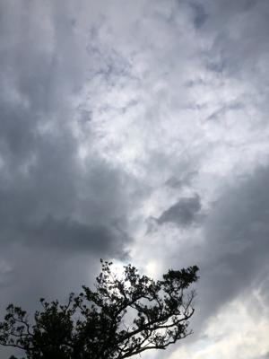
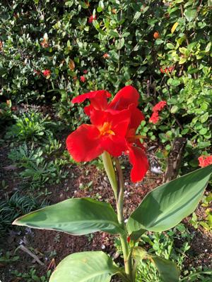
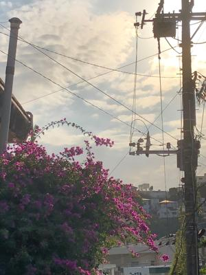
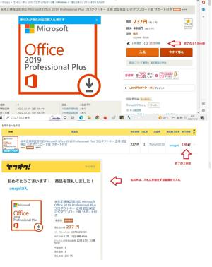

うるがいの話 ある日
最新: オークション落札【うるがいの話 ある日】とは 一日だけのプログです
『うるがいの話』の最新一日だけのプログで、通信料が少なく経済的だ。カニの画像をクリックすると全ての日付が載る『うるがいの話』サイトを表示します
|
|
【うるがいの話】 うるがい(ｳﾙｶﾞｲ urugai)とは、『もずくがに』の名前でとても大きくなります。 |
|---|---|
|
|
【カミマヤーの話】 猫のことを方言でマヤーといいます。カミマヤー（kamimayaa）とは、神の猫のことです。 |
|
【たながぁの音楽】 たながぁ（ﾀﾅｶﾞｰ tanagaa）とは手長えびのことで、何種類かあり大きいのは車 エビぐらいになります。 |

|
【ぶながぁの話】 ぶながぁ(ﾌﾞﾅｶﾞｰ bunagaa)とは、赤い髪の毛、赤い身体、そして身長は１ｍ２０ｃｍ ぐらい、川の蟹を食べているの目撃された。場所は沖縄県国頭郡大宜味村のと ある村僕の隣近所に住んでいる爺さんから、聞いた話です。 |
|
|
【ギーマの話】 ギーマ(giima)とは、山原の里山に咲くスズランに似た、 花を付けます。実は食べられます、 気が付くと口の周りが紫になっています。 |
2022年12月12日 (月）オークション落札
18:23
  
この前、２０１９年版マイクロソフトのオフィスを、最低価格で落札できた。
即決４９８円より、２６１円安い入札開始の２３７円、オークションの終了直
前に誰かが高い金額で入札した場合、すぐにそれより高めの金額で入札つもり
だったが。今年になってオークショーンは１４回目の実践である。

実はこの出品以外に４９０円の最新版の２０２１年のオフィスがあり、入札し
たが支払い金額で送料３，３００円（合計３，４９０円）と吹っ掛けられたの
で手続きを中断した。いやいや、すでにヤバイ取引を経験しているので冷静で
ある。 >
ヤバイ取引メッセージの履歴
urugai 8月30日 13時30分
送料に2500円をプラスして合計6000円にし、コンビニ決済で入力したところ「
この商品はYahoo!かんたん決済をご利用いただけません」と表示されて支払
いができないと表示され決済の手続きができません、出来ない理由も調べまし
たが心あたりがありません
daiqb51219 8月30日 13時03分
ご落札ありがとうございます
送料に2500円をプラスして合計6000円になる様に決済をお願い致します
よろしくお願い致します。
urugai 8月30日 09時47分
2点セット (2) Photoshop CS6 + Premier Pro CS6 でお願いします
で、なぜ決済ができないかヤフーに問い合わせたが、結局教えてもらえなかっ
た。
Yahoo! JAPANカスタマーサービス高橋様
お世話になります
メールにあります
『ご利用の制限については下記のヘルプページもご確認』
は事前に私は行いましたが、
落札者の問題があるのかが分からず、
問い合わせをしている次第です
仮に落札者の問題があり
今後ヤフーオークションは利用できなくなるか
心配しています。
落札者の私の方に問題があるか否かで
教えていただけないでしょうか、
問題があればどう是正したいいのでしょうか
回答の程、よろしくお願いいたします
----- Original Message -----
From: "Yahoo!カスタマーサービス"
Date: 2022/08/31 水 17:41
Subject: [ヤフオク!]支払いできない、流れや概要を知りたい
Yahoo! JAPANカスタマーサービス高橋です。
返信にお時間をいただき、誠に申し訳ございません。
お問い合わせの「Yahoo!かんたん決済のご利用」についてご案内いたします。
誠に恐れ入りますが、Yahoo!かんたん決済では、出品者または落札者の
取引状況などから当社独自の審査基準に満たないと判断した場合、
サービスのご利用をお断りすることがございます。
１８時１５分 ビットコインの総資産 ￥６、７３８（↓６５）